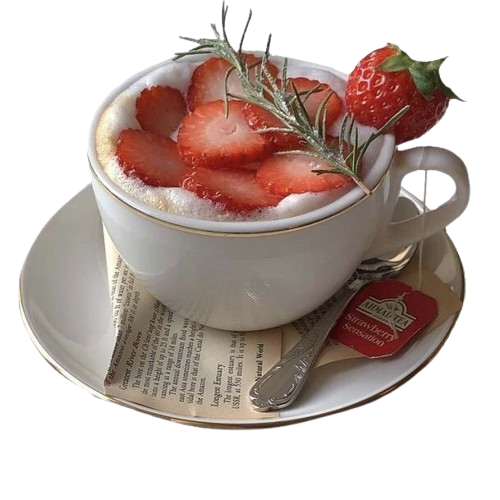
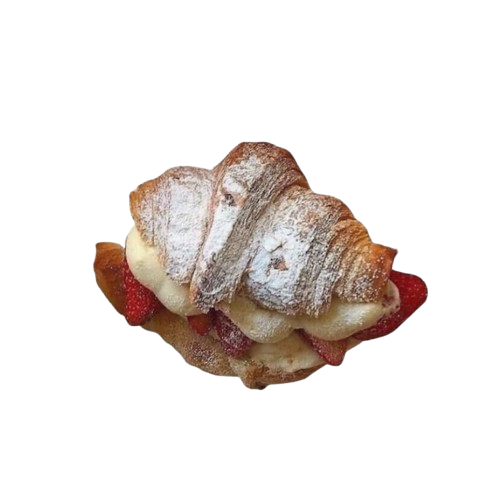

|  |
Tè ai Frutti di Bosco
Un delicato infuso di tè nero e frutti di bosco, arricchito con un mix di fragole, mirtilli, lamponi e ribes.
Il sapore dolce e avvolgente dei frutti si fonde con la freschezza del tè, creando una bevanda
rinfrescante e naturalmente aromatica. Perfetto per chi cerca un momento di piacere fruttato e rigenerante.
10$
|
|  |
Croissant Farcito
Croissant fragrante e burroso, ripieno di morbida crema al cioccolato, dolce marmellata di albicocche o vellutata
crema pasticcera, per un equilibrio perfetto di gusto e consistenza. Ideale per una colazione o una pausa dolce.
9$
|
|
Cinnamon Roll
Morbidissimo e avvolgente, il nostro cinnamon roll è preparato con un impasto soffice arricchito da un delicato ripieno
di zucchero di canna, cannella e burro, il tutto guarnito con una leggera glassa al formaggio cremoso.
11$
|